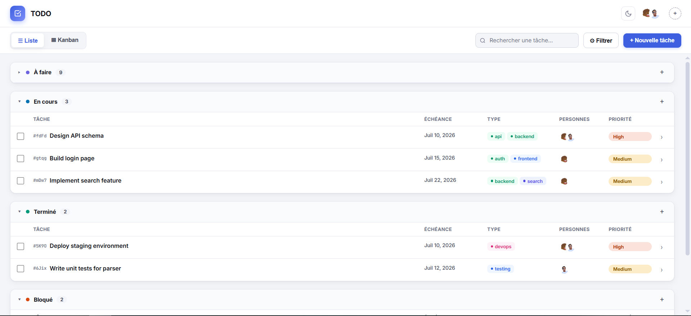

Your TODO.md,
but make it a CLI
A single binary that reads and writes your project’s TODO.md — add tasks, track status, assign actors, attach comments, then open a web dashboard when you need visuals. No database. No cloud. Just a file.
# Tasks - [ ] a1b2 **-** Design API **Tags**: backend **Priority**: high **Created**: 2026-07-09 - [~] c3d4 **-** Build CLI **Actors**: u0v1 **Priority**: medium **Tags**: core, cli - [x] e5f6 **-** Write tests **Status**: done # Actors - u0v1 **Pseudo**: Alice **Type**: Human
Built for teams that use
Designed for the terminal-first workflow
Everything you need to manage tasks without leaving your editor or terminal.
CLI + Dashboard
Manage from the terminal. Open todo dashboard for a web UI with list and Kanban views. Two modes, one binary.
Tags & Priority
Organise with tags and priority levels. Filter, sort, and search instantly.
Actors & Comments
Assign actors, attach comments per task. Track discussions inline.
Kanban Board
List or Kanban with drag-and-drop. Visualise workflow at a glance.
Status Tracking
Todo, In Progress, Done, or Blocked with optional reason. Keep momentum.
Shell Completions
Tab-complete everything. Built-in completions for bash, zsh, fish, and PowerShell.
Try it live
Watch commands run in real time.
Dashboard when you need visuals
Run todo dashboard and open http://127.0.0.1:8383 — list view and Kanban board, no setup.

Ship it in one command
Single binary. No runtime. No dependencies.
Or build from source on GitHub